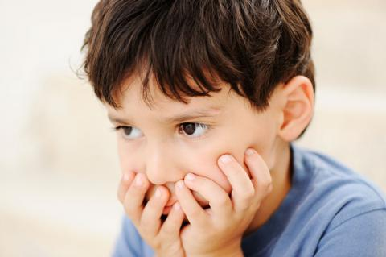

Autismo
Qué es el Autismo y cuales son las causas
Los trastornos del espectro autista (TEA) se encuadran dentro de los trastornos del neurodesarrollo y se caracterizan por las alteraciones relacionadas con la comunicación y la interacción social, así como por presentar intereses fijos y conductas repetitivas. Causas"En la actualidad no es posible determinar una causa única que explique la aparición del Trastorno del Espectro del Autismo (TEA), pero sí la fuerte implicación genética en su origen", según explican desde la Confederación Autismo España. "La gran variabilidad presente en este tipo de trastornos apunta también a la relevancia que puede tener la interacción entre los distintos genes y diferentes factores ambientales en el desarrollo del TEA, pero por el momento, estos elementos no se encuentran claramente identificados, y aún es necesaria mucha investigación al respecto".
Síntomas
En los trastornos generalizados del desarrollo, como los TEA, se suele producir una amplia alteración de diversas funciones. De forma muy resumida, se podrían destacar los siguientes síntomas: Movimientos corporales estereotipados. Anomalías en la emisión, forma y contenido del lenguaje. Insistencia irracional en el seguimiento de rutinas. Señales de alarma Hay una serie de señales de alarma que pueden hacer recomendable una valoración exhaustiva del desarrollo del niño. Hacia los 12 meses de edad No balbucea No hace gestos como saludar con la mano, señalar para pedir alguna cosa o mostrar objetos. No reconoce su nombre ni responde cuando se le llama.
Tratamientos y Medicamentos
No hay cura para el TEA; acompaña al individuo a lo largo de toda su vida. Las terapias e intervenciones conductuales están diseñadas para minimizar los síntomas específicos y pueden aportar una mejoría sustancial de la calidad de vida. El plan de tratamiento ideal coordina las terapias e intervenciones que cubren las necesidades específicas de los niños a nivel individual. El tipo de intervención más efectiva es la psicoeducativa, proporcionada por psiquiatras, psicólogos, pedagotos, logopedas... El tratamiento precoz mejora significativamente los síntomas en muchos casos y es esencial para que los niños desarrollen habilidades sociales y adapten su comportamiento. De hecho, un diagnóstico tardío está relacionado con la aparición de problemas asociados como trastornos de la alimentación, ansiedad o depresión. Medicamentos En el tratamiento de los TEA no se utilizan fármacos salvo en casos muy contados y solo para controlar las posibles complicaciones. José Ángel Alda, psiquiatra infanto-juvenil del Hospital Sant Joan de Deu, de Barcelona, pone como ejemplo el antipsicótico risperidona "en niños que presenten problemas de comportamiento más autismo". En cualquier caso, no existen fármacos que traten de forma específica los TEA.